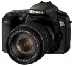

无忌
器材库
全部器材
产品年表
名词百科
榜单
器材库
> APS及其以下画幅可换镜头数码相机 > EOS 20Da

佳能
EOS 20Da
3.1
综合评分
分类
APS及其以下画幅可换镜头数码相机
点评
0 条
图片
0 张
评测
0 篇
Canon公司于2005年2月14日宣布推出820万有效像素DSLR：EOS 20Da。EOS 20Da是为天体摄影者而特制的照相机，只接受订货生产。
产品类型
APS及其以下画幅可换镜头数码相机
综合评分
3.1分
无忌评测
暂无评测
规格参数
网友点评
(0)
产品图 / 样片
(0)
评测文章
(0)
规格总览
产品类型
APS画幅可换镜头数码相机
发布日期
2005-02-14
停产
是
影像规格
影像传感器
CMOS
影像传感器尺寸
22.5 x 15.0mm
总像素
850万
有效像素
820万
影像处理器
DIGIC II
色彩滤镜
RGB原色彩色滤镜
低通滤镜
固定式，在影象传感器前面
色彩空间
sRGB/ Adobe RGB
最大解像度
3504 x 2336
静态图像尺寸
3504 x 2336；2544 x 1696；1728 x 1152
静态图像格式
JPEG, RAW, RAW+JPEG
静态图像质量
优，普通
画幅比
3:2
镜头和对焦
镜头卡口
Canon EF
兼容镜头
Canon EF镜头
对焦系统类型
TTL-CT-SIR CMOS
对焦点
9个
对焦模式
单次自动对焦/人工智能伺服自动对焦/手动对焦 (MF)
自动对焦点选择
自动, 手动
所选自动对焦点显示
取景器内置同时显示在顶部LCD上
AF辅助灯
有
曝光控制
测光模式
中央重点测光, 多分区评价测光, 局部测光
测光范围
1EV~20EV
曝光模式
P（程序自动曝光）, A（光圈优先自动曝光）, S（快门速度优先自动曝光）, M（手动测光曝光）, DEP（景深优先自动曝光）, E-TTL II自动闪光
场景模式
人像, 风景, 微距, 夜间人像
快门类型
电子控制，纵走式，焦平面快门
快门速度
1/8000s - 30s+B
曝光补偿
±2EV以1/3或1/2EV级调整
自动曝光锁
有
ISO感光度
100, 200, 400, 800, 1600, 可扩展至3200
白平衡
日光, 多云, 闪光灯, 色温调节, 荧光灯, 阴影, 自动, 钨丝灯, 手动, 手动白平衡
自拍
10秒
连拍
每秒5张，最多23张JPEG（大/优）或 6张RAW
闪光灯
内置闪光灯
弹出式
闪光模式
E-TTL II
闪光指数
GN 13 (ISO 100)
闪光补偿
±2EV以1/3或1/2EV级调整
外接闪光灯
EX系列E-TTL II闪光灯
取景器/显示屏
取景器
眼平五棱取景器
取景范围
95%
取景放大倍率
0.9倍
屈光度调节范围
-3.0 ~ +1.0
反光镜
快速瞬回半透明
取景器信息
自动对焦信息：对焦点，对焦确认指示灯；曝光信息：快门速度，光圈，手动曝光，曝光范围，ISO感光度设置，曝光补偿，曝光警告；闪光信息：闪光灯预备，FP闪光，FE曝光锁，闪光曝光补偿；JPEG 格式；可拍摄数量；CF卡信息
景深预视
有
LCD类型
彩色TFT LCD
LCD尺寸
1.8英寸
LCD像素
11.8万
视野率
100%
亮度调节级数
5级
文件输入/输出
存储卡
CF
数据接口
USB2.0
视频/音频接口
Video 输出 (NTSC/PAL)
支持打印协议
PictBridge, DPOF
电源
电池
BP-511A/BP-511/BP-514/BP-512
续航能力
温度20°C/不使用闪光灯1000、50%使用闪光灯700；温度0°C/不使用闪光灯750、 50%使用闪光灯550
外接电源
备有交流电适配器
机身规格
颜色
黑色
尺寸
144 x 105.5 x 71.5mm
重量
685g
其它
用户自选功能
18个自选功能，50种设定
支持语言
中文（简体）
工作温度
0-40℃
工作湿度
低于或等于85%
附件
EOS数码处理光盘，数码照片专业处理（DPP）光盘，Adobe Photoshop Elements光盘，电源线，充电器CB-5L，锂电子充电电池BP-511A，接口连接电缆IFC-400PCU（USB线），视频电缆VC-100，相机宽背带EW-100DGR
备注
于2006年4月21日停止接受订货；12中菜单语言
该产品暂无存档的网友点评
该产品暂无存档的产品图
评测 / 相关文章
该产品暂无存档的评测文章
相关文章
［资讯］探秘EOS传奇（上）
（存档）
［资讯］Loreo推出佳能APS-C单反专用3D镜头
（存档）